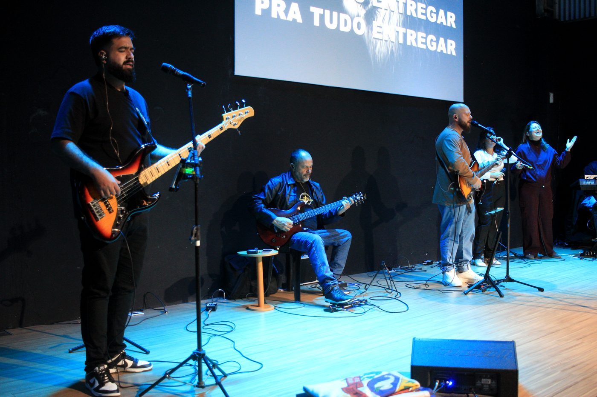
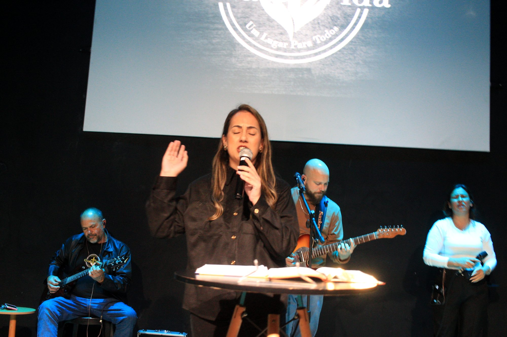

Quem somos
Uma comunidade de fé, cuidado e relacionamentos.
A Comunidade Graça e Vida nasceu com o propósito de anunciar o Evangelho de Jesus Cristo, acolher pessoas e famílias e construir uma comunidade de fé fundamentada no amor de Deus, na comunhão e no cuidado com o próximo.
Conheça nossa história
Nossa comunidade
Há espaço para você aqui.
Famílias
Jovens
Mulheres
Homens
Crianças
Impacto Social

Programação
Esteja conosco.
Encontre um momento para participar dos nossos cultos e encontros. Será uma alegria receber você.
Domingo, 19h · Culto
Sexta, 6h e 20h · Oração
Nosso endereço
Rua Independência, 259
Centro · Telêmaco Borba
Ver programação completa
Próximo culto: domingo · 19h

Mensagens
Palavra que
edifica a sua fé.
Assista às mensagens, acompanhe as séries e aprofunde sua caminhada. Culto ao vivo todo domingo, 19h.
Assistir ao vivoDÍZIMOS E OFERTAS
Quer contribuir com a obra?
Se desejar, você pode contribuir pelo PIX. Favorecido: Comunidade Graça e Vida.
Chave PIX · CNPJ
27.113.399/0001-73